Раздел 1 из 12
Ресерч и бенчмарк
Конкурентный ландшафт, бенчмарк доверия и паттерны знакомства — первая внешняя проверка допущений продуктового брифа. Собрано 2026-09-09; живые интервью ещё не проводились.
Коротко
Что исследование уже изменило в продуктовом решении. Этот блок даёт суть за одну минуту.
Что увидели
- Интент спрашивают все — «зачем ты здесь» перестало быть отличием, им же Tinder задаёт дейтинговый фрейм.
- Безопасность обещают на входе, но рычагов внутри почти нет: у Meetup нет даже блок-листа.
- Событие как самостоятельная единица не занято никем: у Tinder это режимы поиска людей, у Meetup — только внутри группы.
- Репутация из проверяемых фактов не сделана ни у кого из пяти.
Что решили
- Оставить swipe-first точкой входа, событие — вторым контуром (решение по В7, бриф §4).
- Гейт верификации поставить перед первым сообщением и Join, а не на онбординге (§7.3).
- Внести подтверждение встреч, Profile Strength и приватную обратную связь в MVP (§5.5, §7.5).
- Публичный звёздный рейтинг человека не делать никогда — это отказ, а не отсрочка (§10).
Конкуренты
Пять продуктов из трёх групп: AMI и Tinder — хард (тот же рынок, Киев), Peanut, Bumble For Friends и Meetup — аспирационные. Ramle исключён, сервис закрылся в июле 2026. Формулировки синхронизированы с competitor-analysis.md, где есть источники.
Что видели сами. Tinder пройден изнутри с телефона, 28 экранов iOS · 2026-09-08; Meetup — под аккаунтом, 28 экранов веб · 2026-09-08. Внутренности Peanut, BFF и Partiful — только полосами Mobbin вторичный источник. Внутренности AMI и Ramle — данные не подтверждены.
| Вывод | AMI | Tinder | Peanut | Bumble For Friends | Meetup |
|---|---|---|---|---|---|
| П1 · Интент спрашивают все | Психосовместимость + дерево интересов | «Сейчас я ищу…», шесть карточек | Жизненный этап, заявлено | Интент-чипы «зачем ты здесь» | Три отдельных шага про намерение |
| П2 · Безопасность обещают, рычагов нет | На витрине ничего | Правила на первом экране, но верификация — фильтр входящих | Структурное условие входа, заявлено | Блог-статьи и Guidelines в футере | Одна настройка приватности, блок-листа нет |
| П3 · Пейволл в онбординге | Бесплатно, модели нет | Апсел внутри обучающего экрана | Реклама, IAP, B2B, офферы | Реклама и внутренние покупки | Подписка 8-м шагом из 9 |
| О1 · Событие как самостоятельная единица | Событий нет | Explore — режимы поиска людей, не события | Встречи внутри групп, ленты нет | Events только в футере | Событие только внутри группы |
| О2 · Свайп против подбора | Подбор без свайпов | Свайп — ядро и слоган | Свайп по гео и этапу | Свайп, отдельным приложением | Свайпа нет в принципе |
| О3 · Репутация как проверяемый факт | Нет | Ни одного сигнала в профиле | Верификация заявлена, истории нет | Не показана | Рейтинг на группе, у человека голые счётчики |
Три общих паттерна рынка
П1. Интент спрашивают все
Tinder выносит намерение на отдельный шаг, среди шести карточек — «Найти друзей» tinder--onboarding--10-looking-for. Meetup спрашивает намерение трижды meetup--onboarding--04, --08, --09. У BFF строка намерения стоит прямо на карточке колоды, у Peanut это отдельный флоу «Adding lifestage». Отстройку на интент вешать нельзя — тем же приёмом Tinder задаёт дейтинговый фрейм.
П2. Безопасность обещают на входе, а управлять ею внутри почти нечем
Tinder открывает регистрацию четырьмя правилами сообщества — до анкеты tinder--onboarding--03-welcome-rules. Но верификация работает как фильтр входящих: включить её может лишь тот, кто верифицировался сам tinder--chat--29-message-settings-verified. У Meetup вся приватность — одна строка, а блок-листа нет вовсе meetup--profile--26-settings. Значит Report и Block с любого экрана плюс блок-лист (§7.4) — не гигиена, а преимущество.
П3. Пейволл переехал в онбординг
Meetup продаёт подписку восьмым шагом из девяти, до первого увиденного события meetup--paywall--12-onboarding-paywall. Tinder встраивает апсел в обучающий экран: два действия из трёх платные tinder--onboarding--19-tutorial-actions. Запрет на намёки о деньгах в v1 (§9) — осознанное отклонение от нормы категории.
Три отличия
- О1. Событие как самостоятельная единица не занято никем. У Tinder Explore — режимы поиска людей; у Meetup событие нельзя создать без группы; у Partiful событие самостоятельно, но контура открытия новых людей нет вообще.
- О2. Свайп против подбора — рынок разошёлся, середина свободна. Связки «свайп + собственный контур событий» нет ни у кого из пяти.
- О3. Репутация как проверяемый факт не сделана никем. Meetup ставит балл на группу, а у человека только счётчики; у Tinder в профиле ни одного сигнала.
Бенчмарк доверия
Измерение: сколько оснований доверять незнакомцу есть у пользователя до того, как он написал первое сообщение или согласился встретиться. Выбрано потому, что это общая слабость всех пяти конкурентов. Полностью — trust-benchmark.md.
Почему это главный рычаг
BlaBlaCar вместе с проф. Arun Sundararajan (NYU Stern) опросил 18 000+ участников в 11 странах: доверие к участнику с полным онлайн-профилем — 88%, против 58% для коллег, 42% для соседей и 16% для контакта из соцсетей (blablacar.com/trust). Значит доверие строится конструкцией профиля, которую мы контролируем, а не социальным графом, которого у нас на старте нет.
Сравнение без ложной точности
Максимум шкалы — 40 (8 критериев × 5). Серым — категорийный фон и Nextdoor, который посчитан по семи критериям и строго с остальными не сравнивается. Мы обгоняем обоих прямых конкурентов и стоим у нижней границы эталонов. Единственный критерий, где нас обходит Tinder, — К4, живость профиля: на карточке колоды у нас нет ничего.
Ключевые находки по механизмам
| Механизм | Откуда | Что закрывает | Статус |
|---|---|---|---|
| Подтверждение встречи, double-blind | Airbnb, BlaBlaCar, Couchsurfing | К3 и К4 сразу. Единственный источник истории, который наполняется сам | в MVP, §5.5.1 |
| Profile Strength | Upwork (Rising Talent), BlaBlaCar (levels) | К8 — работа на новичке. Единственный сигнал, работающий при пустой базе | в MVP, §5.5.2 |
| Приватная обратная связь | Couchsurfing (Private Reference) | Разрыв между «всё нормально» и «пожаловаться» | в MVP, §7.5 |
| Признак отзывчивости | Airbnb (response time), Upwork (тег) | К4. Берём отзывчивость, а не присутствие | в MVP, §5.5.3 |
| Публичный звёздный рейтинг | Airbnb, BlaBlaCar, Upwork | Ничего — сломал бы продукт | отклонён, §10 |
Почему рейтинг не сработает
- В эталонах оценивают услугу, у нас оценивали бы человека. Хоста — за жильё, водителя — за поездку. У нас услуги нет: «4 из 5» относится к человеку как к другу.
- Статусная иерархия убивает задачу продукта. Мы существуем, чтобы снижать порог знакомства; публичный балл делает обратное.
- В социальном контексте у рейтинга нет дисперсии — все ставят 5, чтобы не обидеть.
- При нашей плотности это статистически бессмысленно — 1–2 оценки на человека месяцами.
Независимое подтверждение из прохода: единственный из семи разобранных продуктов, кто ставит балл в социальном контексте, ставит его группе, а не человеку meetup--event--19-detail-top.
Паттерны
Пять принципиально разных механик знакомства. Различаются не интерфейсом, а двумя вещами: какая единица лежит перед пользователем и кто делает выбор. Полностью — interaction-patterns.md.
| # | Паттерн | Единица | Кто выбирает | Пример | Где ломается |
|---|---|---|---|---|---|
| 1 | Попарный отбор | Человек | Обе стороны | Tinder, BFF, Peanut | Низкая плотность; асимметрия внимания; фото — слабый предиктор дружбы; матч ≠ разговор |
| 2 | План как точка входа | Событие | Участник | Meetup, Partiful | Горлышко организатора; no-show; «событие есть, знакомства нет» |
| 3 | Распределение системой | Нет | Продукт | Timeleft | Недобор; ответственность за вечер на продукте; из-за стола не выйти |
| 4 | Обжитое пространство | Комната | Никто | Discord, Geneva | Мёртвая комната не чинится; модерация в каждой; знакомство может не наступить |
| 5 | Запрос-отклик | Нужда с дедлайном | Инициатор | Couchsurfing Hangouts | Спам; асимметрия смелости; отклик нечитаем без репутации; ничего не копится |
Выбран: попарный отбор (swipe-first)
Решение PM от 2026-09-09, внесено в §4 брифа. Колода — точка входа; событие остаётся вторым контуром по входу, но первым по тому, что мы обещаем (§1) и чем зарабатываем (§9). Этим же решением закрыт вопрос В7: §1 отвечает за обещание, §4 — за входную механику.
Почему он под наш контекст
- Быстрее всех даёт первую ценность. Обучать нечему, смысл понятен за десять секунд. Прямо работает на TTFC, главную метрику §11.
- Механика знакома аудитории. В Украине более 870 000 недельных пользователей дейтинг-приложений, 31% из них 18–24, и оба лидера рынка свайповые — физика свайпа считывается без объяснений Sensor Tower · people.md §1.3. Исправлено 2026-09-11: здесь стояло «Tinder — фактический дефолт», что источником не подтверждалось.
- Совместим с сигналами доверия. Правило 12 требует показывать Verified, Profile Strength, счётчик встреч и отзывчивость до первого сообщения; карточка колоды — единственная поверхность, где все четыре видны сразу.
Цена решения записана, а не оспаривается. Разбор рекомендовал обратное — событие как точку входа. Рекомендация отклонена, отсюда три обязательные компенсации, все внесены в бриф:
- пустое состояние колоды проектируется первым — на старте это первый экран реального пользователя;
- прогрессивное расширение радиуса: видимо, с вопросом в первый раз, только по расстоянию, с потолком по границе агломерации;
- выход в события присутствует в Discover всегда, а не только когда карточки кончились.
Выводы
Каждая строка — пробел, выведенная из него гипотеза и раздел, откуда она взялась. Гипотезы H1–H6 остаются в plan.md; здесь нумерация продолжается с H7.
| # | Пробел | Гипотеза | Откуда |
|---|---|---|---|
| H7 | На карточке колоды нет признака, что человек жив в продукте: К4 = 2 балла | Отзывчивость грубым ведром поднимет долю первых сообщений сильнее, чем бейдж присутствия, и не создаст поверхности для слежки | Бенчмарк |
| H8 | Как поведёт себя человек, упёршийся в пустую колоду — не проверено | Экран «карточки кончились» с расширением радиуса и списком событий удержит: он уйдёт во второй контур, а не из продукта | Паттерны |
| H9 | Сколько людей готовы создать событие — не проверено | Создания в два шага недостаточно: без посевных организаторов лента останется пустой | Конкуренты, О1 |
| H10 | Доля матчей, дошедших до сообщения — не проверено | Ice-breaker и общее событие поднимут конверсию сильнее, чем изменения самой колоды | Паттерны, 1 |
| H11 | Заполняемость post-event check-in — не проверено | Без напоминания и видимой выгоды отвечать будет меньшинство, и §5.5 не наполнится | Бенчмарк |
| H12 | Кто и за какое время проверяет селфи — не решено (§12) | Задержка верификации бьёт по TTFC: получивший матч не станет ждать проверки | Бенчмарк, К1 |
| H13 | Пороги ступеней Profile Strength — не решено (§12) | Если Regular недостижим за неделю, механизм превращается в клеймо новичка | Бенчмарк |
| H14 | Реальная плотность аудитории в Киеве — не проверено | Порог §11 на старте не будет достигнут ни у кого, и swipe-first первые недели держится на пустом состоянии | Конкуренты, В1 |
| H15 | Почему Ramle не удержал вовлечённость без свайпов — не проверено | Причина не в отсутствии свайпов, а в отсутствии повода встретиться | Конкуренты, О2 |
Что этап закрыл
- Вопрос 7 плана — «события vs люди»: ответ есть, swipe-first.
- Вопросы В1–В6 к PM — отвечены, решения в §1, §2.1, §6, §7.2, §7.3, §9 брифа.
- Вопрос В7 — отвечен 2026-09-09, решение в §4 брифа.
Статус
Гипотезы H1–H6 — все в статусе TBD, ни одна не проверена:
интервью с пользователями не проводились, план есть, результатов нет.
H7–H15 выведены, но тоже не проверены. Персоны и Jobs to be done — черновые.
Пока интервью не проведены, всё здесь стоит на конкурентах и эталонах, но не на наших пользователях. Дополнительным разбором чужих продуктов это не чинится.
Скриншоты
Десять экранов, на которых держатся выводы выше. Полный набор — 74 файла с подписями в screens/INDEX.md. Кликните, чтобы открыть в полном размере.
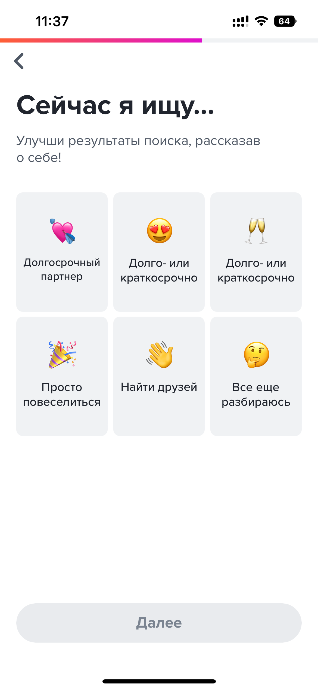
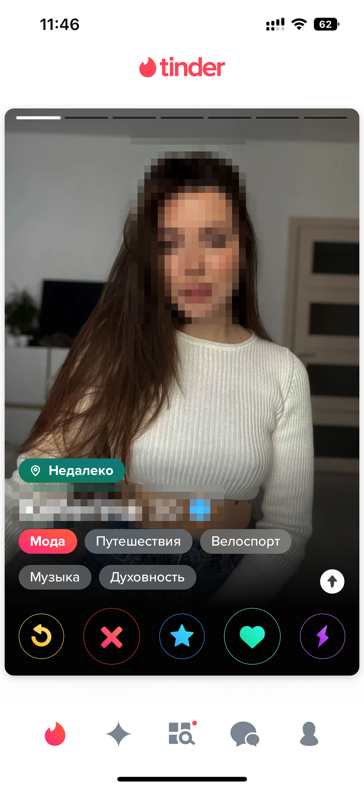
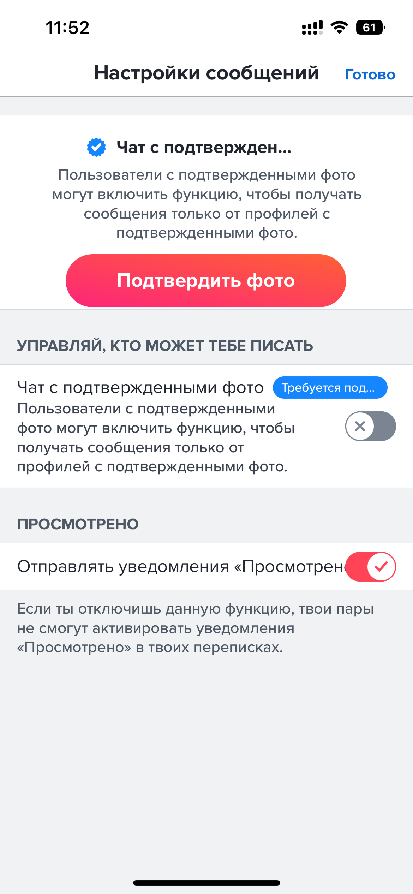
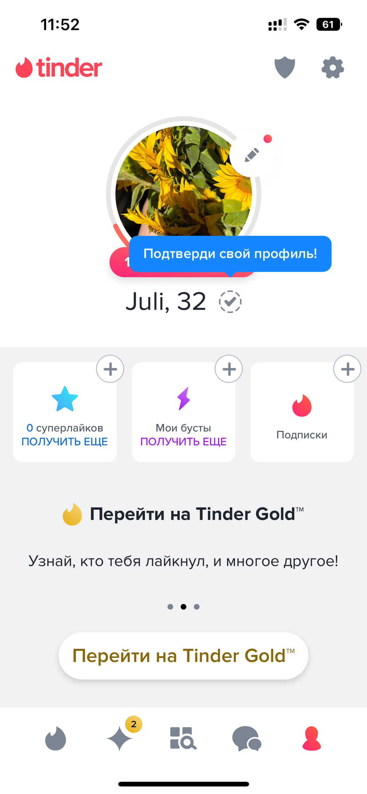
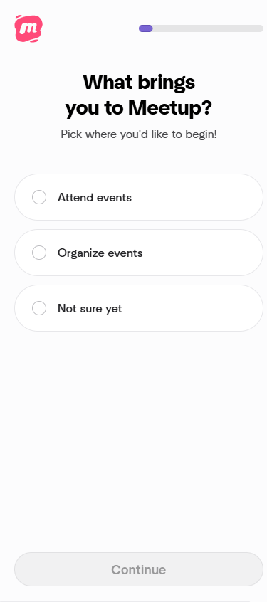
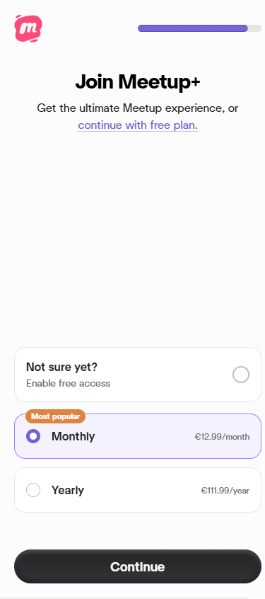
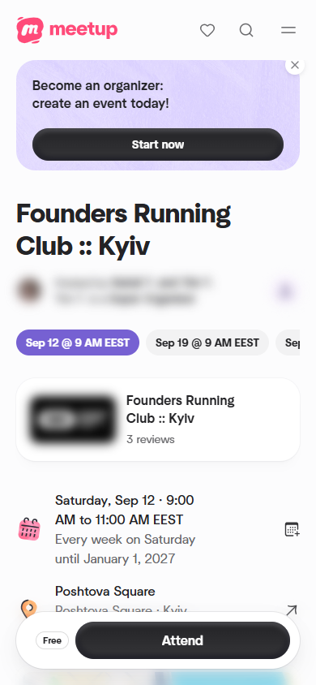
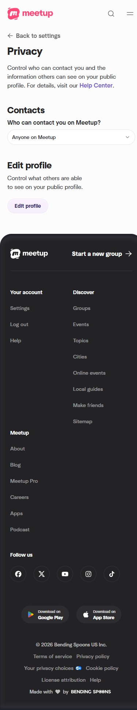
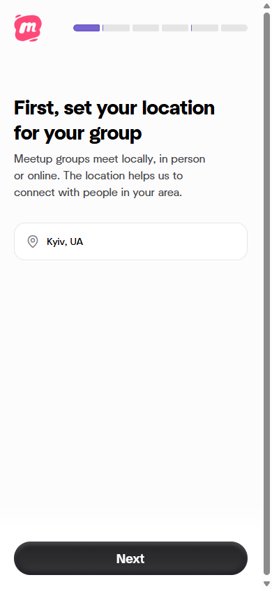
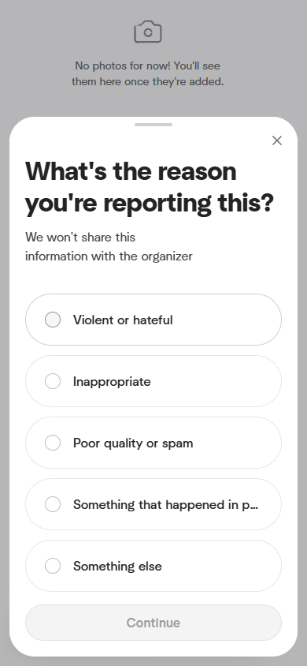
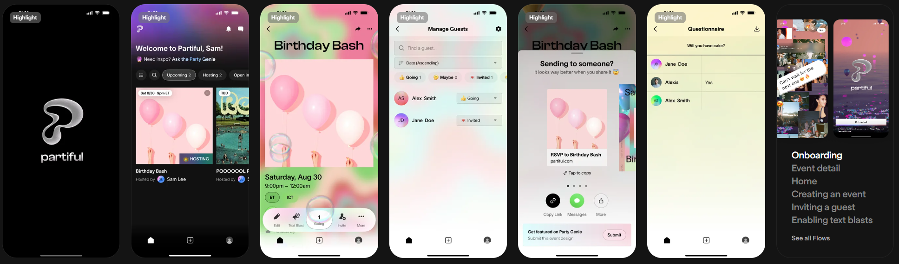
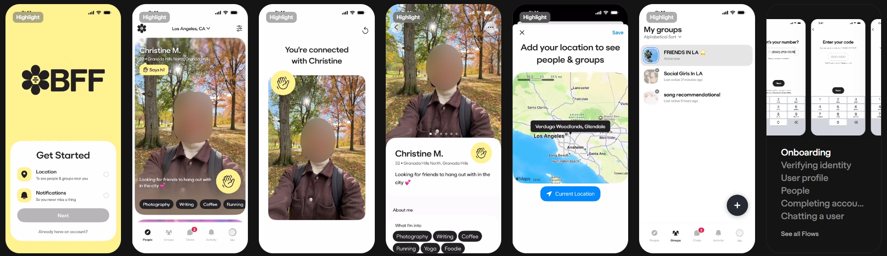
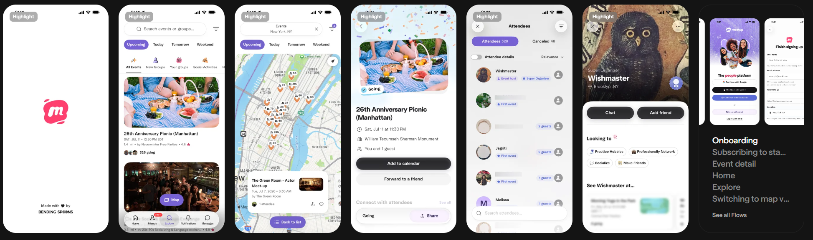